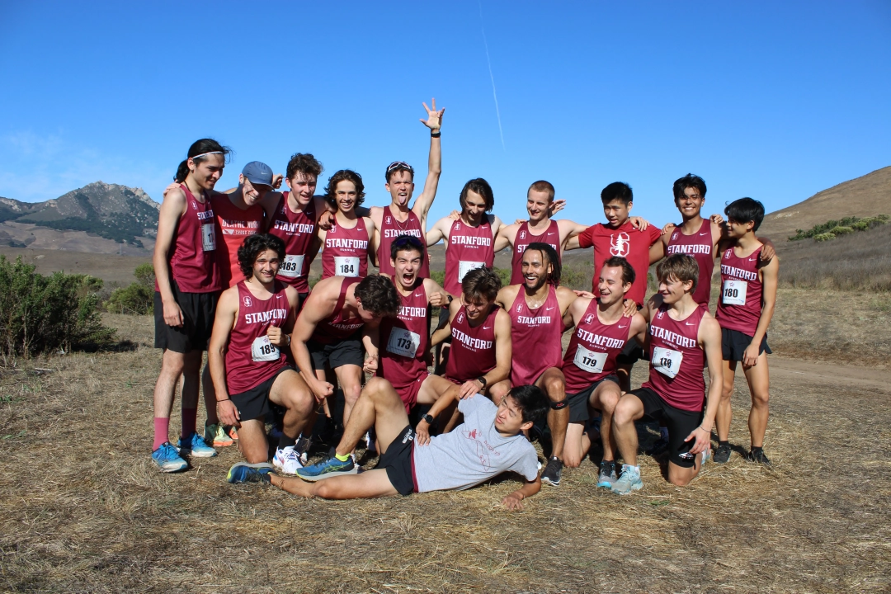
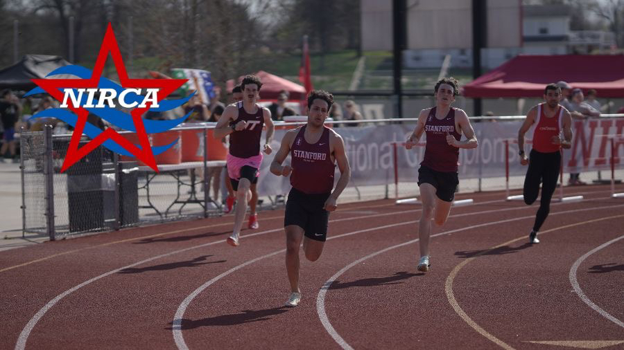

COMPETE WITH US
Join the TeamErnest Lee
A Palo Alto native (born in Stanford Hospital), Ernie Lee ran competitively for Gunn High School and Princeton University. After graduating with a degree in physics, Ernie completed graduate studies at Stanford in the applied physics department. It was then that he began coaching at his former high school. He coached both cross country and track and field at Gunn High School for 18 years. Ernie currently works for a nanomaterials company and still races as a member of the HOKA Aggies Running Club.
Records
Track
60M
James Dang
7.13
Winter 2018
Cal All-Comers
100M
James Dang
11.16
Winter 2018
Aggie Open
200M
James Dang
22.45
Winter 2018
Cal All-Comers
Haley Brogan
26.30
Winter 2016
Los Gatos All Comers
400M
Matt Millett
50.12
Winter 2016
Berkeley Invite
800M
Mike Becich
1:54
Spring 2016
NIRCA Nationals
Laura Vanderweyen
2:16.95
Spring 2023
NIRCA Nationals
1500M
Benedikt Bünz
3:51.78
Unknown
Unknown
Laura Vanderweyen
4:43.90
Spring 2023
NIRCA Nationals
1600M / MILE
Mike Becich
4:25.6
Unknown
Unknown
Molly Dicke
5:11
Unknown
Unknown
3000M
Frank DeGuire
8:57.22
Winter 2024
Cal All-Comers
3200M / 2 MILE
Benedikt Bünz
9:28
Unknown
Unknown
5000M
Amaury Gouverneur
15:00.4
Winter 2024
Kim Duyst Invitational
Molly Dicke
18:03.14
Unknown
Unknown
Cross Country
6000M
Chloe Taylor
22:11.5
Fall 2022
Santa Clara Bronco Invitational
8000M
Michael Thorburn
25:47.53
Fall 2023
NIRCA Nationals
Jack Ryan
25:47.9
Fall 2017
Santa Clara Bronco Invitational
Road
Half Marathon
Oliver Bear
1:14:51
Spring 2016
NIRCA Nationals
Marathon
Matt Millett
2:52:23
Spring 2015
Boston Marathon
Amaris Martinez
3:27:09
Spring 2017
Oregon Foot Traffic Marathon
Field
Javelin
Frank DeGuire
10.71m
Winter 2024
Cal All-Comers
Shot Put
Frank DeGuire
17'8"
Winter 2024
NIRCA Nationals
Miscellaneous
Liquidy Lag Lap
Frank DeGuire
5:36.46
Fall 2023
21+ Division
Mary Fetter
7:05
Fall 2022
21+ Division
Charlie Lamb
5:36.46
Fall 2022
Choco Milk Division
Anna Tavakolian
6:54
Fall 2022
Choco Milk Division
Rafael Basto
5:27
Spring 2022
Vegan Division
Calvin Laughlin
3
Fall 2022
# of vomits